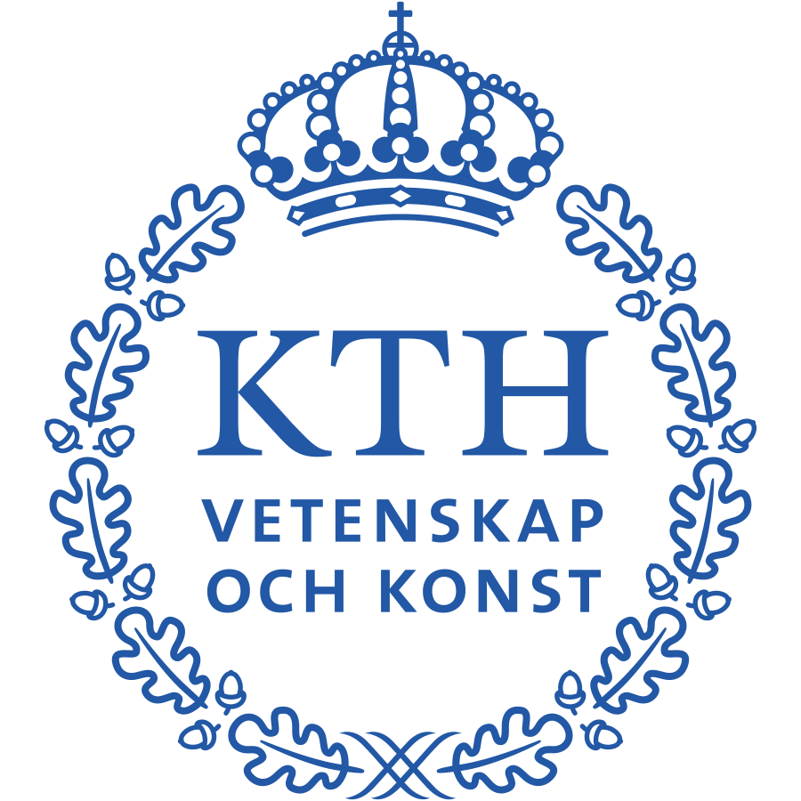
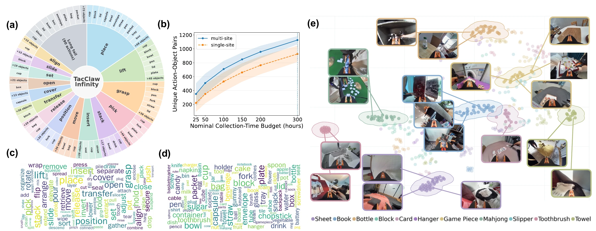
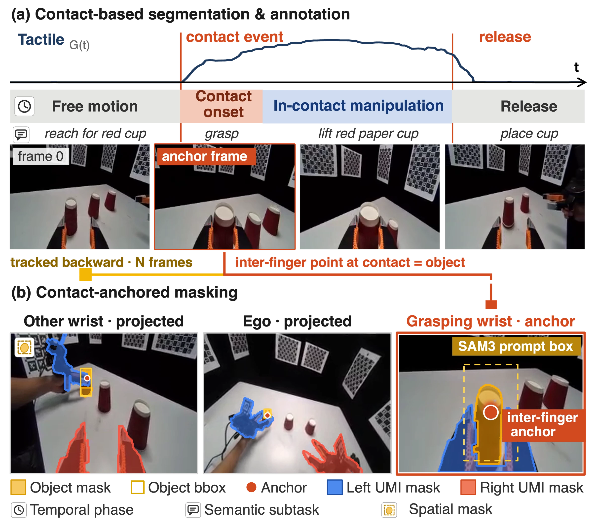
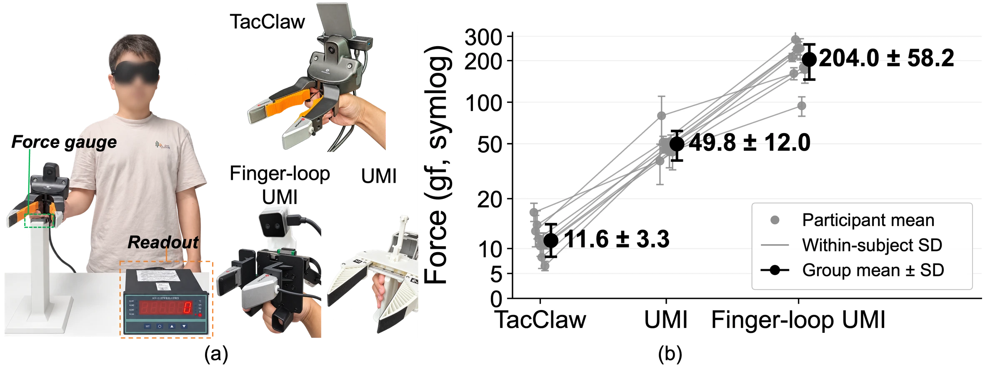
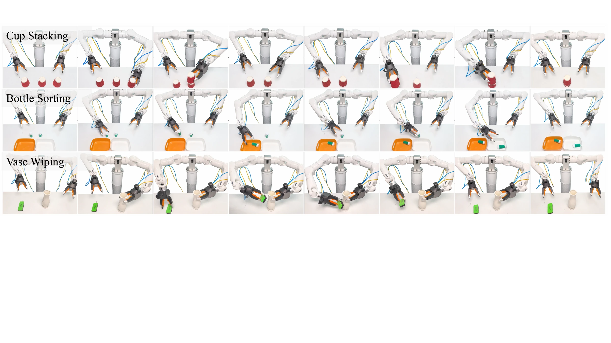

TacClaw-InfinityA Large-Scale Vision-Tactile-Language-Action Dataset
for Dexterous Manipulation
- 1Daimon Robotics
- 2Nanjing University
- 3Great Bay University
- 4Tohoku University
- 5Southern University of Science and Technology
- 6The Hong Kong University of Science and Technology (Guangzhou)
- 7Nanyang Technological University
- 8University College London
- 9Northwest University
- 10Renmin University of China
- 11Tsinghua University
- 12Fudan University
- 13DeepMind
- 14The Hong Kong University of Science and Technology
- 15Royal Institute of Technology
- 16National University of Singapore



Project video
Abstract
Large-scale robot learning increasingly relies on diverse human demonstrations, yet tactile manipulation data remain difficult to scale, and existing multimodal datasets often lack consistent quality control and structured supervision. We present TacClaw-Infinity, a large-scale structured Vision-Tactile-Language-Action (VTLA) dataset for contact-rich manipulation, collected with TacClaw, a tactile-enabled UMI-style handheld interface that records synchronized visual observations, fingertip tactile signals, and end-effector trajectories without requiring a target robot during data collection. TacClaw-Infinity is built through distributed collection across homes, laboratories, industrial workplaces, retail stores, and outdoor environments including tasks contributed by academic and industrial collaborators. Together, these efforts yield over 10,000 hours, 1 million episodes, and 1 billion frames spanning more than 1,000 task types. We develop a scalable pipeline for trajectory reconstruction, multimodal quality control, embodiment-aware filtering, and structured annotation, covering contact-centric segmentation, subtask description, and spatial grounding. We validate TacClaw-Infinity at both the data and model levels: At the data level, we assess the collection interface, the action-space compatibility of the curated demonstrations, and the structured annotations, while for the model level, we demonstrate cross-embodiment transfer across three heterogeneous robots without robot-specific demonstrations. The code and dataset will be made public.
A dataset built across places, people, and tasks
Collected with 200 TacClaw devices across 20 organizations and more than 50 locations, including homes, laboratories, industrial workplaces, retail stores, and outdoor environments.

Beyond a single environment
Shared task protocols provide repeated demonstrations of common skills, while collector-defined tasks contribute a long tail of manipulation behaviors. Both single-hand and bimanual interactions are represented.
Four synchronized modalities
Episodes combine visual observations, fingertip tactile signals, end-effector trajectories, and language descriptions. Contact events connect the temporal, semantic, and spatial annotations.
From human demonstrations to structured supervision
TacClaw enables demonstrations without a target robot during collection. A shared processing pipeline then reconstructs trajectories, checks robot executability, and uses touch to anchor annotations.
- 01
Collect with TacClaw
Wrist and egocentric views, gripper states, fingertip tactile signals, and end-effector motion capture how people interact with objects.
- 02
Curate trajectories
Reconstructed poses are evaluated for workspace reachability and manipulability on each target embodiment before policy training.
- 03
Anchor annotations in contact
Contact and release delimit interaction phases. The inter-finger contact point localizes the manipulated object across camera views.

TacClaw interface
Preserving the operator’s sense of contact
A short, rigid path from the fingers to the jaws lets operators feel and regulate contact during a demonstration.
In the paper’s blindfolded study of nine participants, the mean first-perceived contact force was 11.6 ± 3.3 gf with TacClaw, compared with 49.8 ± 12.0 gf for the UMI interface and 204.0 ± 58.2 gf for the finger-loop interface.

Zero-robot cross-embodiment transfer
Policies trained on TacClaw demonstrations transfer to Tianji, RealMan, and DM-Sparky without collecting robot-specific demonstrations. We evaluate cup stacking, bottle sorting, and vase wiping, using 50 trials per task.
With tactile input, mean success reaches 74.0% for π0.5 and 72.7% for StarVLA across the three tasks and robot embodiments.

Success rates by task and embodiment
| Policy | Embodiment | Cup stacking | Bottle sorting | Vase wiping | Average |
|---|---|---|---|---|---|
| π0.5 | Tianji | 90 | 44 | 28 | 54.0 |
| π0.5 | RealMan | 86 | 42 | 16 | 48.0 |
| π0.5 | DM-Sparky | 82 | 44 | 18 | 48.0 |
| π0.5 + Tactile | Tianji | 94 | 96 | 54 | 81.3 |
| π0.5 + Tactile | RealMan | 80 | 76 | 38 | 64.7 |
| π0.5 + Tactile | DM-Sparky | 100 | 92 | 36 | 76.0 |
| StarVLA | Tianji | 78 | 46 | 12 | 45.3 |
| StarVLA | RealMan | 78 | 38 | 8 | 41.3 |
| StarVLA | DM-Sparky | 80 | 54 | 20 | 51.3 |
| StarVLA + Tactile | Tianji | 70 | 94 | 60 | 74.7 |
| StarVLA + Tactile | RealMan | 76 | 84 | 58 | 72.7 |
| StarVLA + Tactile | DM-Sparky | 84 | 90 | 38 | 70.7 |
Citation
Manuscript · 2026
@misc{zhu2026tacclawinfinity,
title = {TacClaw-Infinity: A Large-Scale Vision-Tactile-Language-Action Dataset for Dexterous Manipulation},
author = {Zhu, Fucai and Zhang, Xidong and Zhang, Yichi and Wang, Yipan and Wang, Fubo and
Wu, Zibin and Li, Kaiqi and Jiao, Jianhao and Lu, Shihan and Hu, Di and Xu, Mengdi and
Zhu, Siyu and Long, Xiaoxiao and Yao, Yao and Cao, Xun and Xu, Zhuo and
Hashimoto, Koichi and Chen, Qifeng and Li, Zhe and Yang, Jianfei and Lu, Haofei and
Kragic, Danica and Yan, Shuicheng and Duan, Jianghua and Wang, Michael Yu and
Yuan, Weihao},
year = {2026},
note = {Manuscript}
}